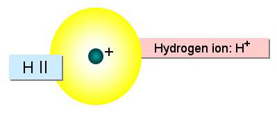
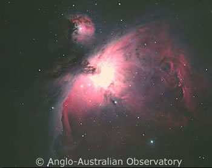

Ionised hydrogen, commonly called HII (pronounced H-two), is a hydrogen atom that has lost its electron and is now positively charged. It is easily detected at optical wavelengths as it releases a photon of wavelength 656.3 nm when it recaptures an electron and returns to its neutral state.

The Orion Nebula (M42) is possibly the most famous emission nebula. The red areas show regions of ionised hydrogen.
Credit: AAO/David Malin
Credit: AAO/David Malin
It exists througout galaxies as interstellar gas clouds called HII regions, or as part of the intercloud gas. However, the most spectacular manifestations of ionised hydrogen are the bright emission nebulae that occur when a cloud of neutral hydrogen is ionised by the UV radiation from young, massive stars.